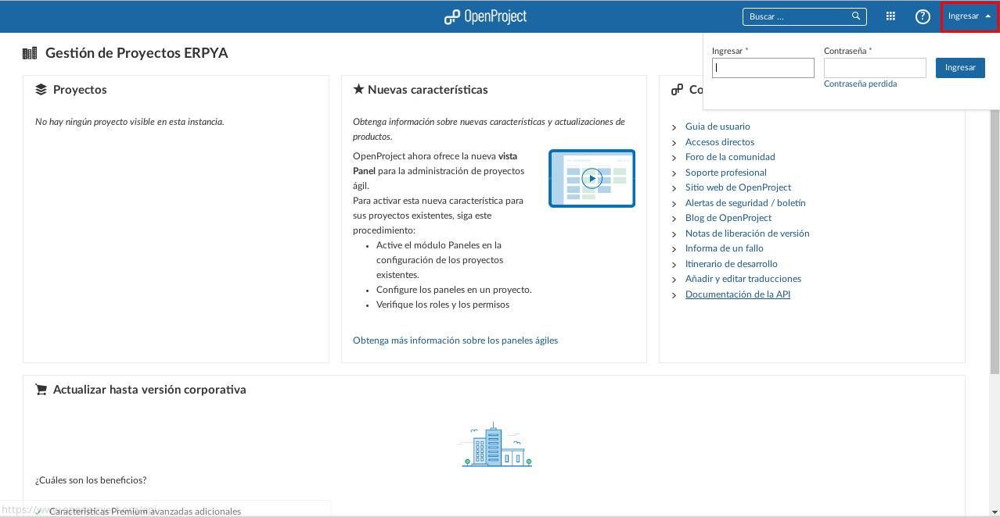

Inicio de Sesión¶
Para iniciar sesión en el OpenProject acceda a la url indicada anteriormente.
Imagen 1. Pantalla Principal

En el lado superior derecho de la pantalla se encuentra la opción “Ingresar”, misma que debe seleccionar para que se desplacen los campos de acceso a la herramienta.

Imagen 2. Inicio de Sesión
Introduzca el usuario y la contraseña que le fue facilitado por la empresa ERPyA en los campos correspondientes, luego seleccione el boton “Ingresar” para acceder al OpenProject.
Imagen 3. Ingresar a OpenProject

Al ingresar la interfaz inicial se puede apreciar de la siguiente manera.
Imagen 4. Interfaz Inicial

Interfaz de OpenProject¶
Barra Principal de OpenProject Se encuentra situada en la parte superior de la pantalla y se distingue por su color azul, la misma se compone de las siguientes opciones:
Imagen 5. Barra Principal de OpenProject
“Seleccione un Proyecto”: Se encuentra en la parte superior izquierda de la pantalla, es utilizado para seleccionar el proyecto en el que se desea navegar.
“Logo de OpenProject”: Se encuentra en el centro de la parte superior de la pantalla, es utilizado para regresar a la interfaz inicial de la herramienta.
“Buscador de OpenProject”: Se encuentra del lado derecho del “Logo de OpenProject”, es utilizado para filtrar la busqueda de tareas en el proyecto seleccionado.
“Módulos”: Se encuentra del lado derecho del “Buscador de OpenProject”, es utilizado para desplegar los módulos que tiene la herramienta.
“Ayuda”: Se encuentra del lado derecho de “Módulos”, es utilizado para desplegar un menú con distintas opciones de ayuda que sirven para conocer más sobre el OpenProject.
“Configuración de Usuario”: Se encuentra del lado derecho de “Ayuda”, es utilizado para configurar el perfil del usuario, la cuenta del usuario, entre otras cosas.

Menú Principal¶
Resumen: Al seleccionar un proyecto se muestra el menú principal para desplazarce por todas las opciones que tiene disponible dicho proyecto, el mismo se compone de lo siguiente:
Imagen 6. Menú Principal de OpenProject
“Paquetes de Trabajo”: Permite que se reflejen de forma ordenada todas las tareas que contiene el proyecto seleccionado.
“->”: Permite reflejar de forma detallada todas las tareas del proyecto seleccionado, filtradas por la opción que se selccione en el menú.
“Tabla de Tiempo”: Permite reflejar el tiempo invertido en cada una de las tareas del proyecto seleccionado.
“Miembros”: Muestra de forma ordenada los datos de los diferentes miembros que se encuentran incluidos en el proyecto seleccionado.
“Reuniones”: Permite agendar reuniones, así como también reflejar las reuniones que fueron agendadas por otros miembros incluidos en el proyecto.

Fases y Tareas¶
Las fases en la herramienta de OpenProject se refieren a todas aquellas fases que deben cumplir los proyectos para su elaboración existosa, las mismas se componen de tareas, las tareas son actividades que se deben realizar para lograr una fase, una tarea se crea a partir de cierta información necesaria, misma que es expresada en sus diferentes campos. El ciclo de vida de una tarea depende de lo sencilla o compleja que esta sea, existen dos tipos de tareas en OpenProject que son las tareas padre y las tareas hijas.
Tareas Padre: Las tareas padre son todas aquellas tareas que se deben realizar para elaborar una fase del proyecto exitosamente.
Tareas Hija: Las tareas hija son todas aquellas tareas necesarias para realizar una tarea padre correctamente.
Uso de OpenProject¶
El usuario puede conocer la identificación o número de la tarea, el estatus, el responsable de la misma y el encargado de realizarla, así como también el lapso de tiempo que estas poseen. A continuación se describe el procedimiento a realizar para conocer el seguimiento de las tareas de un proyecto.
En la barra principal de OpenProject explicada anteriormente, seleccione el proyecto en el cual desea navegar.
Imagen 7. Proyecto

Podrá apreciar de la siguiente manera la interfaz que posee el proyecto seleccionado.
Imagen 8. Interfaz del Proyecto

Seleccione la opción “Paquetes de Trabajo” para visualizar las tareas correspondientes al proyecto seleccionado.
Imagen 9. Paquete de Trabajo

Note
“Ejemplo”
Una tarea hija se distingue de una tarea padre porque las tareas hijas se encuentran dentro de las tareas padres, como ejemplo del caso se presenta la tarea padre número “4536” y sus tareas hijas número “4542” y “4543” expuestas en la imagen anterior:
Gestión Financiera
Gestión de Tesorería
Gestión de Cobranza
Campos Importantes¶
El usuario puede dar seguimiento al proyecto y conocer su flujo de trabajo por medio de los siguientes campos que identifican a cada una de las fases y tareas.
“ID”: Representa el número de identificación de la tarea.
“Asunto”: Representa el título de la tarea.
“Tipo”: Indica si es una fase o una tarea.
“Estado”: Indica en que estado se encuentra la tarea.
“Autor”: Indica el nombre de la persona que creó la tarea.
“Asignado a”: Indica el nombre la persona que esta realizando o va a realizar la tarea.
“Actualizada el”: Indica la fecha de la última actualización de la tarea.
“Fecha de Finalización”: Indica la fecha tope en la que se debe entregar la tarea.
“Tiempo Empleado”: Indica el tiempo que se ha empleado para realizar la tarea.